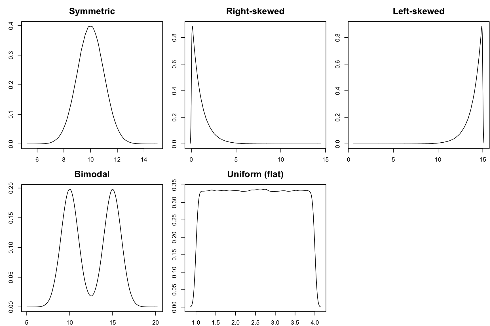
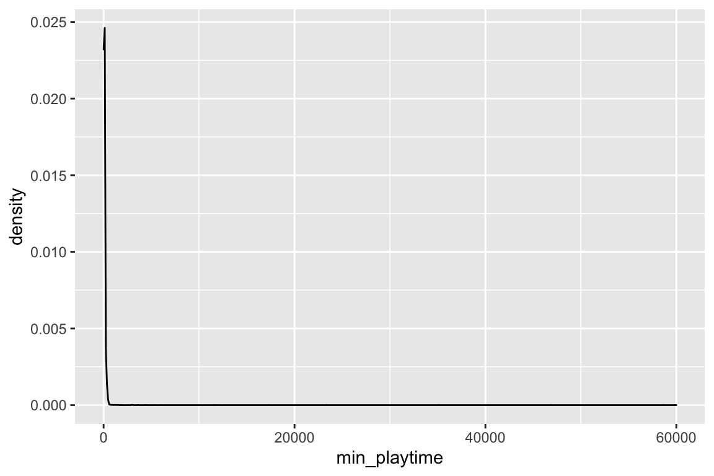

Topic 2 Univariate Visualization and Data Summaries
Learning Goals
- Understand how bar charts, histograms, and density plots are constructed (not in full detail for a density plot)
- Identify the best type of plot to display a given variable and be able to construct those plots in R
- Clearly describe plots of quantitative variables using the concepts of shape, center, spread, and outliers
- Relate summary statistics of data to the concepts of shape, center, spread, and outliers
Discussion
When you interpret a plot of a quantitative variable, I expect you to discuss the following four aspects as part of a complete answer.
Shape: How are values distributed along the observed range? What does the distribution of the variable look like?

games <- read_csv("https://raw.githubusercontent.com/rfordatascience/tidytuesday/master/data/2019/2019-03-12/board_games.csv")
ggplot(games, aes(x = min_playtime)) +
geom_density()
Center: What is a typical value of the variable?
- Quantified with summary statistics like the mean and median.
summary(games$min_playtime)## Min. 1st Qu. Median Mean 3rd Qu. Max.
## 0.00 25.00 45.00 80.88 90.00 60000.00Spread: How spread out are the values? Are most values very close together or far apart?
- Quantified with summary statistics like the variance and standard deviation.
- Interpretation of the variance: it is the average (roughly) squared distance of each value to the mean. Units are the squared version of the original variable.
- Interpretation of the standard deviation: square root of the variance. Measures spread on the same scale as the original variable (same units as the original variable).
var(games$min_playtime)## [1] 406883.1sd(games$min_playtime)## [1] 637.8739Outliers: Are there any values that are particularly high or low relative to the rest?
A good paragraph putting all of these aspects together:
The distribution of minimum playtimes is right-skewed with values ranging from 0 to 60,000 minutes. The center of the distribution is around 45 minutes (median). The mean is higher at about 80.88 minutes because of the high outliers (such as the game with a 60,000 minute minimum play time). Because of the outliers, it is difficult to see the spread of the bulk of the data clearly, and it is these outliers that contribute to the high standard deviation of 637.9 minutes.
Qualities of a good paragraph:
- Describes the shape and range of the data
- Includes units
- Reports on the mean and median and explains any discrepancies between them
- Describes spread in terms of standard deviation
- Comments on the noteworthy visual features of the plot, including outliers
Exercises
A template RMarkdown document that you can start from is available here.
As you proceed, put any new code that you encounter on your cheat sheet.
Part 1
We have data on course evaluations for all courses offered in the Spring 2019 semester at Johns Hopkins University (source). We have the following pieces of information on each course:
avg_rating: The average of student responses to the question asking them to rate the overall quality of the course using the Likert scale:- 1 = Poor
- 2 = Weak
- 3 = Fair
- 4 = Good
- 5 = Excellent
division: EitherASfor Arts & Sciences orENfor Engineeringdept_name: Name of the department
# Load required packages
library(readr)
library(ggplot2)
# Read in the course evaluation data
evals <- read_csv("https://www.dropbox.com/s/3gayi1iq2p76kn0/jhu_evals.csv?dl=1")Exercise 1
The first step in any data analysis is to get acquainted with the data. Look at the first few rows, and obtain the dimensions of the dataset.
# Look at the first 6 rows
head(evals)
# Get the dimensions of the dataset
dim(evals)- How many cases are there? (What are the cases?)
- What type of variable are the key ones described above?
Exercise 2
Are the numbers of courses taught in the Arts & Sciences and the Engineering divisions roughly the same? Before making the plot, make note of what your expectation is. Then compare to what you observe when you make the plot. (Clearly defining your expectations first is good scientific practice that is often not practiced enough to become habit.)
ggplot(evals, aes(x = division)) +
geom_bar()Exercise 3
Now we’ll look at the distribution of the avg_rating variable and associated summary statistics. Just like before, make note of what you expect the plots to look like before you make them.
# Plots
ggplot(evals, aes(x = avg_rating)) +
geom_histogram()
ggplot(evals, aes(x = avg_rating)) +
geom_density()# Summary statistics
# Adapt the code from the Discussion section to compute these
???- Write a good paragraph interpreting the histogram or density plot. (Discuss the 4 essential aspects.)
- What information is given by the tallest bar of the histogram?
- In what situations might you prefer a histogram to a density plot and vice-versa?
- Looking at the summary statistics, compare the mean to the median, and relate this to the shape of the distribution of average ratings. What would the distribution probably look like if the ordering of the mean and median were reversed?
Part 2
When we are sitting behind a computer screen analyzing data, it can be easy to get caught up in the code, methods, or findings, and lose track of the human impact of our analysis.
The analysis we did in Part 1 actually foreshadows a rather serious ethical concern for faculty.
Exercise 4
Suppose that you were asked to rate the overall quality of one of your Fall courses on a 5-point scale. What kinds of things would you think about in giving your rating? Do you think you would give the same rating on a different day? In your opinion, do you think other students are using the same criteria as you?
Exercise 5
In this last exercise, we’ll explore the misleading nature of the mean of Likert-scale responses.
The datasets being read in below come from 3 different courses with 20 students each. For each student we have their rating of the overall course quality on the scale:
- 1 = Poor
- 2 = Weak
- 3 = Fair
- 4 = Good
- 5 = Excellent
# Read in the course evaluation data
course1 <- read_csv("https://www.dropbox.com/s/qbw4ahys9mkxsqj/course1.csv?dl=1")
course2 <- read_csv("https://www.dropbox.com/s/tg8g0hchh435lx7/course2.csv?dl=1")
course3 <- read_csv("https://www.dropbox.com/s/b3cg2tdbpyjzwr6/course3.csv?dl=1")For each course, make an appropriate plot showing the distribution of student ratings. Put yourself in the professor’s shoes and briefly summarize the information that the plot gives.
# Plot the distribution of ratings for each course ???Now compute the mean rating for each course. You can adapt the code from the Discussion section to replace
summarywithmeanto display only the mean.# Compute the mean rating for each course ???Consider a school policy that ranks professors based on this mean rating and uses the rankings for evaluative and promotion purposes. Based on your investigations so far, would such a policy be fair? Is there a potential for it creating injustice?
Extra!
If you have time and want to explore more, try these exercises.
- Make a plot showing the number of courses by department. Is it effective?
Add the following to the end of the code for your last plot. What does this code do? Add this to your cheat sheet.
+ theme(axis.text.x = element_text(angle = 90, hjust = 1))Continue adding to the same plot the following code. What does it do? Modify it so that it is better suited to your plot. Add this to your cheat sheet.
+ labs(x = "xxx", y = "yyy", title = "title")